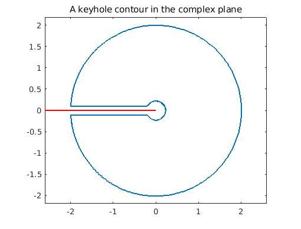

Chebfun is able to represent complex functions of a real variable, which lends itself very well to computing paths and path integrals in the complex plane. In this brief example we demonstrate this by integrating the function
f = @(x) log(x).*tanh(x);
around a 'keyhole' contour which avoids the branch cut on the negative real axis.
We'll first define our keyhole. Let $r$, $R$, and $e$ be the inner and outer radii and the width of the key respectively:
r = 0.2; R = 2; e = 0.1;
Construct the contour:
s = chebfun('s',[0 1]); % dummy variable
c = [-R+e*1i -r+e*1i -r-e*1i -R-e*1i];
z = join( c(1) + s*(c(2)-c(1)), ... % top of the keyhole
c(2)*c(3).^s ./ c(2).^s, ... % inner circle
c(3) + s*(c(4)-c(3)), ... % bottom of the keyhole
c(4)*c(1).^s ./ c(4).^s); % outer circle
Plot the contour and the branch cut of the function $f$:
LW = 'LineWidth'; lw = 1.2; FS = 'FontSize'; fs = 14;
plot(z,LW,lw), axis equal, title('A keyhole contour in the complex plane',FS,fs);
hold on, plot([-2.6 0],[0 0],'-r',LW,lw); hold off, xlim([-2.6 2.6])

Now to integrate around the contour, one parametrises by a real variable, say $t$ (which here is done implicitly by the Chebfun representation), and integrates the function $f(z(t)) z'(t)$ with respect to $t$.
In Chebfun, this is easy:
I = sum(f(z).*diff(z))
I = 0.000000000000007 + 5.674755637702225i
For the function we chose above, one can compute this integral exactly.
Iexact = 4i*pi*log(pi/2)
Iexact = 0.000000000000000 + 5.674755637702224i
How does this compare with our computation?
error = abs(I - Iexact)
error =
7.551281095400966e-15